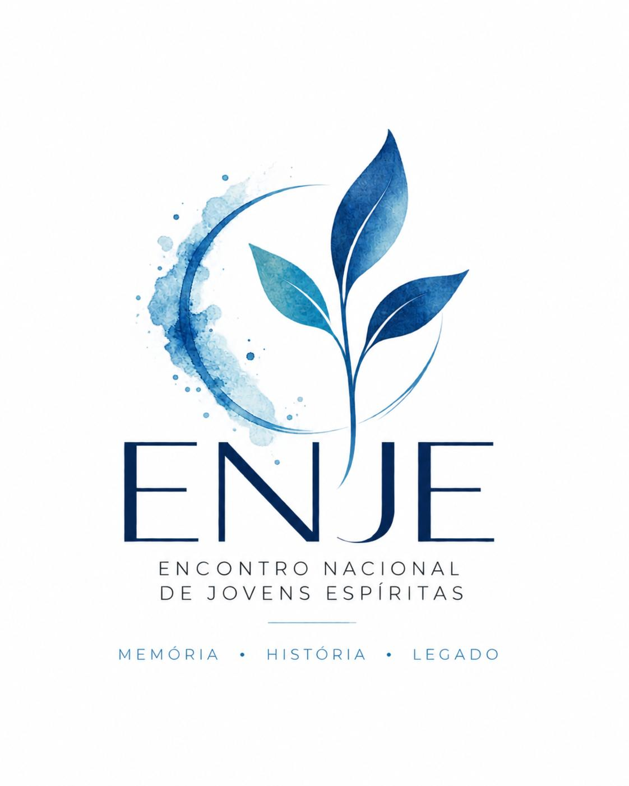

Juventude Espírita em Portugal
Memória,
História e Legado
Um arquivo vivo para preservar a trajetória dos Encontros Nacionais de Jovens Espíritas e as histórias de quem ajudou a construí-los.
O projeto
Uma memória que
continua viva.
O ENJE — Memória, História e Legado procura resgatar, investigar e preservar a história dos Encontros Nacionais de Jovens Espíritas, realizados em Portugal desde 1985. Através da recolha de fotografias, documentos, notícias e testemunhos, o projeto valoriza o percurso de diferentes gerações e procura transmitir esta memória às gerações futuras.
Conta com a colaboração da ADEP e com o apoio da Federação Espírita Portuguesa (FEP) e de diversas instituições espíritas em Portugal.
Saber maisMostrar menos
O ENJE — Memória, História e Legado é um projeto dedicado ao resgate, à investigação, à organização e à preservação da história dos Encontros Nacionais de Jovens Espíritas (ENJE), realizados em Portugal desde 1985. A iniciativa nasceu da vontade de recuperar uma trajetória construída por diferentes gerações de jovens espíritas, reconhecendo as pessoas, as instituições, as experiências e os ideais que contribuíram para a continuidade destes encontros ao longo do tempo.
Mais do que recordar edições passadas, o projeto procura reconstruir a história dos ENJE a partir dos registos disponíveis, reunindo fotografias, cartazes, programas, documentos, notícias de jornais, gravações audiovisuais e testemunhos de pessoas que participaram na organização ou vivenciaram estes momentos. Cada material encontrado representa uma oportunidade de compreender melhor o contexto de determinada edição, conhecer as atividades desenvolvidas, identificar os seus protagonistas e preservar informações que, de outra forma, poderiam perder-se com o passar dos anos.
O trabalho desenvolve-se através de uma investigação documental e histórica que procura distinguir os factos confirmados das informações ainda por verificar. Nem todas as edições possuem arquivos completos, e algumas memórias permanecem dispersas entre associações, centros espíritas e antigos participantes. Por esse motivo, o projeto também pretende mobilizar a comunidade espírita portuguesa, convidando pessoas e instituições a partilharem fotografias, documentos, recordações e outros registos que possam contribuir para a reconstrução desta história. Uma única fotografia, um programa antigo ou um testemunho pessoal podem ajudar a recuperar uma parte significativa da memória coletiva.
O Instagram @enje.2027 constitui uma das plataformas de divulgação do projeto. Através dele, a investigação histórica transforma-se em conteúdos acessíveis ao público, dando a conhecer as diferentes edições, os seus temas, os contextos em que decorreram e as experiências que marcaram a juventude espírita ao longo das décadas. As publicações procuram aproximar o passado do presente, despertando a curiosidade das novas gerações e incentivando antigos participantes a contribuir para a preservação desta memória.
O projeto conta também com a colaboração da Associação de Divulgadores de Espiritismo de Portugal (ADEP), que disponibilizou materiais históricos, incluindo documentos e fotografias, fundamentais para o desenvolvimento da investigação. Esta colaboração demonstra a importância da cooperação entre pessoas e instituições na recuperação e salvaguarda do património documental do movimento espírita português.
A iniciativa ENJE — Memória, História e Legado conta com o apoio da Federação Espírita Portuguesa (FEP) e de diversas instituições espíritas em Portugal. A sua visão é contribuir para a construção de uma memória histórica organizada, acessível e duradoura, que possa servir de referência para futuras gerações e ajudar a compreender a evolução dos encontros e da própria juventude espírita em Portugal.
Preservar esta história não significa apenas olhar para trás. Significa reconhecer o caminho percorrido, valorizar quem o construiu e compreender como os ideais que inspiraram diferentes gerações continuam a encontrar expressão no presente. Cada edição representa um capítulo de uma caminhada coletiva; cada documento recuperado ajuda a completar essa narrativa; e cada pessoa que partilha uma recordação torna-se parte ativa deste trabalho de preservação.
Porque um encontro pode acontecer durante um fim de semana, mas as relações, os ensinamentos e as experiências que dele resultam podem permanecer por toda a vida. O projeto procura garantir que essa trajetória não fique limitada à memória individual de quem a viveu, mas seja transmitida, documentada e conhecida pelas gerações que darão continuidade a esta história.
ENJE — Memória, História e Legado.
Um encontro acontece num ano. Uma história permanece para sempre.
Conhecer o caminho percorrido é também compreender onde estamos e para onde podemos caminhar.
ENJE · Memória, História e Legado
A trajetória
Uma história em movimento
Cada ENJE é um capítulo. Juntos, formam uma história de encontros, ideias, amizade, espiritualidade e renovação.
Arquivo dos encontros
Explore os ENJE
Os 38 encontros já estão estruturados no arquivo. Pesquise por número, ano, local ou tema. O arquivo será ampliado progressivamente à medida que novos documentos históricos forem reunidos.
Nenhum encontro encontrado.

O legado
Não guardamos apenas
datas.
Guardamos testemunhos, fotografias, cartazes, programas, temas, lugares e as experiências que marcaram gerações.
O arquivo pretende aproximar passado e presente, permitindo que a juventude de hoje reconheça que também faz parte de uma caminhada iniciada muito antes dela.
Critério histórico
O arquivo distingue informações confirmadas de dados ainda em levantamento. Quando uma data, local ou tema não está documentalmente confirmado, a ficha permanece aberta em vez de preencher a lacuna por suposição.
Faça parte
A história também pode estar com você.
Possui fotografias, documentos, cartazes ou relatos de algum ENJE? Este arquivo cresce através da colaboração de quem viveu essa história.